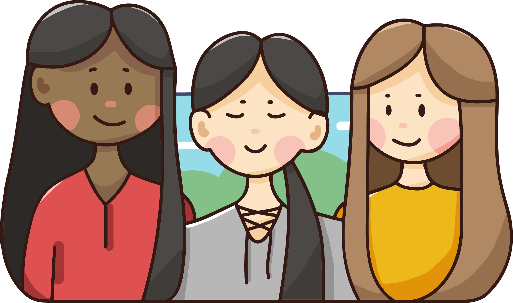

Hello, I'm Jackie!
I’m a sophomore studying computer science at UC Berkeley. I’m also passionate about graphic design and photography.
StyleMe | CalHacks 5.0
PROGRAM CODED IN PYTHON

Second Impressions at Berkeley
GRAPHIC DESIGN
Second Impressions at Berkeley
The Process
My second client with Innovative Design was Second Impressions at Berkeley. The officers at Second Impressions at Berkeley requested a logo and cover photo design for both Second Impressions at Berkeley and Second Impressions at UCLA. During my first meeting with a representative from Second Impressions at Berkeley, I learned that the organization was similar to Humans of New York but for international people on campus and off campus. The organization's mission is to portray internationalism and impressions.
Because the organization's mission is to portray internationalism and impressions, I wanted to include these aspects in my logo and cover photo designs. I decided to incorporate a book to represent storytelling and a globe to represent internationalism. The plane, which points towards Berkeley, represents the journey from a different country to the United States.

The officers at Second Impressions at Berkeley liked my design for the cover photo, so I digitalized my design on Adobe Illustrator. I incorporated the school colors in order to make the Berkeley and the UCLA cover photos distinctive.

Second Impressions at Berkeley ended up selecting the bottom row of cover photos (Berkeley with yellow background and UCLA with light blue background). Second Impressions at Berkeley is currently using my design as their cover photo on their Facebook page.

Reflections
This project taught me the importance of communication, especially when working with clients. The themes of internationalism and impressions was hard to convey symbolically, and I had to communicate frequently with the representatives at Second Impressions at Berkeley in order to facilitate ideas and produce something they wanted.
If I could redo this project, I would've included more digitalized designs for the client. Although the officers settled on one specific design from my doodles, I wish I had given them more options to choose from when the design was digitalized. Unfortunately, since this project was near the end of the semester, time constraints also played a huge role in me not being able to accomplish this.

IEEE at Berkeley
GRAPHIC DESIGN
IEEE at Berkeley
The Process
My first client with Innovative Design was Institute of Electrical and Electronics Engineers (IEEE) at Berkeley. The officers at IEEE at Berkeley requested a logo remake that correlated with the official IEEE logo while incorporating elements that represented Berkeley.
For my first draft, I created a graphic of the Campanile, the symbolic clocktower at the center of the UC Berkeley campus. The Campanile, shaped similarly to an arrow, replaced the up arrow in the middle of the official IEEE logo. I replicated the kite shape and the circular arrow in order to stay consistent with the original IEEE logo.

Official IEEE Logo

My IEEE Logo Design
I worked together with Victor Zhang, another graphic designer on my team. The circular arrow that he designed was more clean and visually looked better and was preferred by the officers at IEEE at Berkeley. We collaborated to combine his arrow with my Campanile.

Victor and I worked together to determine the best placement of text for the final design. IEEE at Berkeley ended up selecting the following arrangement as the final design:

Reflections
This project was very rewarding for me. It was the first professional client I've received as a graphic designer, and the entire process taught me the importance of communication and teamwork. I had to communicate frequently with the officers of IEEE to ensure that I created mockup designs that aligned with what they wanted. In addition, I had to collaborate with my teammate, Victor, to facilitate ideas/designs and produce a final deliverable that satisfied our client's logo requirements. This experience also helped me improve as a graphic designer, for I received constructive criticism from my team leader, my other teammates who weren't working on this specific project, and the officers at IEEE themselves.
For me, the major fallback about this project, however, was the fact that it restricted my creative freedom. Since IEEE at Berkeley already had a set idea on how they wanted their logo to look like (they wanted their logo to be similar to the official IEEE logo), there weren't many opportunites to think outside the box and create something fresh. Victor and I did make some slight modifications, such as incorporating the Campanile and changing the arrow to make the logo sleek and cleaner, but other than that, there wasn't much that could be modified to the logo without breaking their requirements.

Visual Illustrations
GRAPHIC DESIGN
Visual Illustrations
Just things I enjoyed designing!

A poster I made for my committee (Technology Committee for Berkeley Phi Beta Lambda) to celebrate the end of the semester.

Illustration of me and my friends (was printed into a sticker)!
A 2D representation of Tiny's and the Bar Upstairs located in New York.

A design I created for the prompt "Roots". It represents the "Roots of Northwood" (Northwood was the high school I attended), and it shows the two sides of a Northwood student: the academic side and the creative side.
Pixel art!

Graphic for Back to School Yearbook Page

Graphic for Girls' Soccer Yearbook Page
Warmth
BERKELEY AS HOME
Mood
compliCATed Emotions
Travel
let's go on a journey!